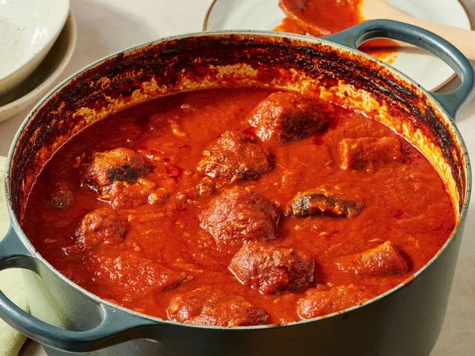

Italian Sauce

What is Italian Sunday Sauce?
Italian Sunday Sauce is a slow-cooked tomato sauce made with a mix of meats like sausage, meatballs, and short ribs, simmered for hours until everything blends into a deep, rich flavor. It’s a classic Italian-American tradition, usually cooked on Sundays when families gather for a long, comforting meal. Served over pasta, it’s hearty, aromatic, and full of love, the kind of dish that fills the whole house with warmth.
Ingredients
- 2 pounds pork neck bones
- 2 teaspoons kosher salt, plus more to taste
- 1 teaspoons ground black pepper
- 2 tablespoons olive oil, divided
- 1 ¼ pounds Italian sausage links
- 1 ½ cups finely chopped white onion
- 2 cloves garlic, minced
- 2 (12 ounce) cans tomato paste
- 1 (28 ounce) can tomato puree
- 1 (28 ounce) can crushed tomatoes
- 7 cups water
- 1 tablespoon white sugar, or more to taste
- 1 bay leaf
- 1 tablespoon dried basil
- ½ teaspoon dried oregano
- 12 large cooked meatballs
Steps
- Gather all ingredients.
- Sprinkle neck bones on all sides with salt and pepper.
- Heat 4 teaspoons oil in a large, heavy-bottomed stockpot or Dutch oven over medium-high heat. Place neck bones in the pot and cook for 6 minutes, flipping halfway through. Transfer to a plate.
- Add sausage links to the drippings and brown for 3 minutes on each side, adding remaining oil as needed. Set aside with the pork.
- Add onion to the drippings and season with salt. Cook, stirring often, until onion is soft and translucent, about 5 minutes. Add garlic and cook until fragrant, about 1 minute. Stir in tomato paste and cook for 1 minute.
- Add tomato puree and crushed tomatoes, than add water and sugar; cook, stirring constantly, until smooth. Add bay leaf. Rub basil and oregano between your fingers to release the aroma and add to the sauce.
- Slice sausages into large chunks and return to the pot with the neck bones; bring to a simmer, stirring occasionally. Add meatballs, reduce heat to low, and simmer, stirring occasionally, for 4 to 6 hours.
- Remove neck bones and bay leaf. Remove any meat remaining on the bones, shred, and return to the sauce.
- Serve and enjoy!
Home